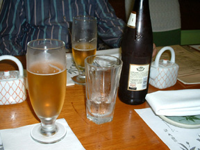
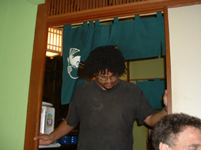
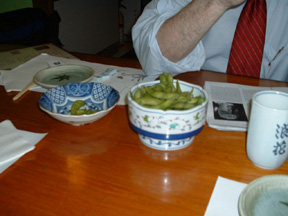
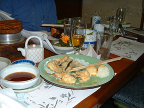

Classics Book Club of NY

Classics Book Club of NY
|
|
|
4/19/04 Gravity's Rainbow @ Naniwa Bob enjoying a cold one Our waitress at Naniwa
 mmm...beverages Larry smiling?
Stan showing his pearly whites Ken taking a minute for the camera
Andy... or is that Stanley? Andy speaking his best Japanese
  Eric navigating the small dining area the musical fruit
 maybe a fork would be easier "That Pynchon is such a nut!" "Yeah, tell me about it."
"I should have ordered that instead"
|
|
For problems or questions regarding this web contact ciresemaj@hotmail.com
|